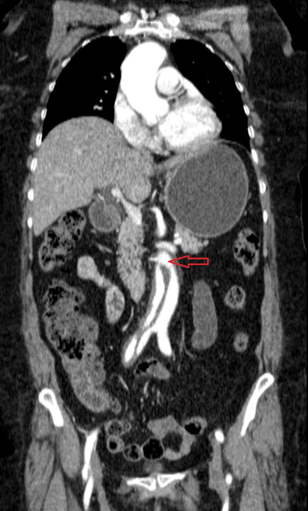
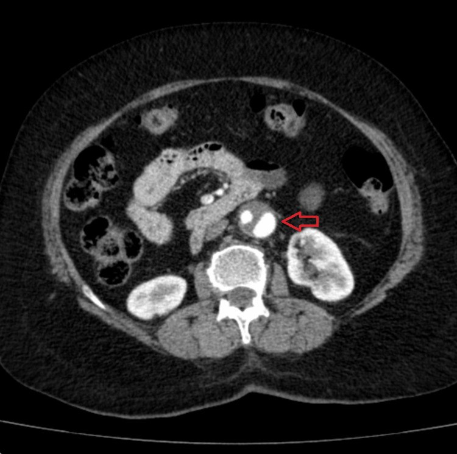
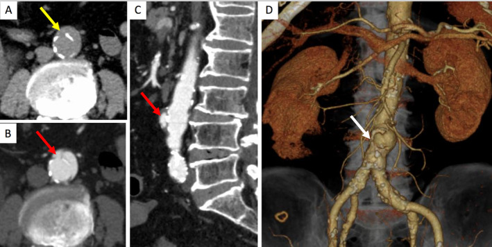

171 — Bóc tách ĐMC bụng & khối máu tụ trong thành / Abdominal aortic dissection & intramural hematoma
Tags: pattern:boc-tach vung:DMC-bung protocol:CTA-DMC incidentaloma:IMH
Mức chắc chắn (certainty): tổng hợp y văn (literature synthesis) — tổng hợp cohort + ca nguyên văn có ảnh CC BY/CC BY-NC, ghi PMCID từng ảnh.
1. Tổng quan bệnh học – cơ chế hình ảnh
- Bóc tách ĐMC bụng đơn độc (isolated abdominal aortic dissection — IAAD): vết rách nội mạc nằm hoàn toàn dưới cơ hoành, không có bóc tách ĐMC ngực. IAAD chiếm 1,1–4,1% tổng số bóc tách ĐMC; một cohort 7.572 ca bóc tách chỉ có 159 ca IAAD (2,1%) (Shaiea 2025, PMC12387512).
- Phổ bệnh học của “thành ĐMC mỏng manh”: cùng một cơ chất là mất toàn vẹn thành mạch, biểu hiện thành 4 hình thái hay chồng lấp: bóc tách (máu vào lớp áo giữa tạo lòng giả), IMH (máu trong thành do vỡ vasa vasorum, không có vết rách nội mạc rõ), PAU (loét xuyên qua mảng xơ vữa vào áo giữa) và phình/thoái hóa. Vì vậy IMH có thể tiến triển thành bóc tách, PAU có thể tiến triển thành IMH hoặc phình giả (Montatore 2026, PMC13302428).
- TẠI SAO thấy được trên CT:
- Vạt nội mạc (intimal flap) là cấu trúc tuyến mảnh, không ngấm thuốc, nằm giữa hai lòng; lòng thật thường nhỏ hơn, ngấm thuốc sớm và mạnh; lòng giả lớn hơn, ngấm thuốc chậm/ít hơn hoặc tắc hoàn toàn (không ngấm) — chênh lệch nồng độ iod giữa hai lòng tạo “double-lumen”.
- IMH là máu đông trong thành: trên CT không cản quang có hình liềm tăng tỷ trọng bám theo thành, dày 5–15 mm; máu cấp có đậm độ khoảng 50–70 HU, cao hơn cơ và mỡ, nhưng không ngấm thuốc sau tiêm.
- PAU là ổ loét đáy xơ vữa ăn sâu vào thành: sau tiêm thấy ổ đối quang lồi ra ngoài lòng mạch, thường nằm ngay trên một mảng vôi hóa; có thể kèm IMH quanh ổ loét.
- Ngưỡng định lượng cần nhớ:
- ĐMC bụng ≥ 30 mm (đường kính ngoài–ngoài) = phình; ngưỡng can thiệp chương trình chung của phình ĐMC bụng là ≥ 55 mm ở nam / ≥ 50 mm ở nữ, hoặc tăng > 10 mm/năm, hoặc có triệu chứng (bài 170).
- IMH dày 5–15 mm; các dấu hiệu nguy cơ cao trên CTA: đường kính tối đa > 50–55 mm, máu tụ quanh ĐMC, ổ loét/ULP, thành dày dai dẳng (PMC13302428).
- PAU sâu > 20 mm, PAU lan nhanh hoặc kèm IMH dai dẳng = nguy cơ cao, cần can thiệp (PMC13302428).
- Phân loại theo chiều dài: IAAD khu trú ≤ 50 mm (focal) vs lan rộng > 50 mm (extensive). Trong cohort 159 ca, nhóm focal lớn tuổi hơn, nhiều triệu chứng hơn, đường kính lớn hơn và sống 10 năm ước tính 70% vs 90% ở nhóm extensive (PMC12387512).
- Diễn tiến tự nhiên: cohort 68 ca IAAD (55,9% điều trị nội khoa, 39,7% EVAR, 4,4% mổ hở) cho thấy nhóm nội khoa có tử vong 21,0% so với 3,7% ở EVAR; lòng giả tắc hoàn toàn có xu hướng sống tốt hơn lòng giả còn thông (PMC9996307). Đây là dữ liệu quan sát, có thiên lệch chọn bệnh (bệnh nhân nặng hơn có thể được chọn nội khoa) — không được đọc là “EVAR tốt hơn mọi trường hợp”.
- Biểu hiện lâm sàng: đau bụng/lưng/hông, đau lan xuống chân, thiếu máu tạng hoặc chi, tăng huyết áp, hoặc không triệu chứng (tình cờ trên siêu âm/CT). Ca nguyên văn: nữ 60 tuổi đau hông–chân kiểu “điện giật” rồi tê/yếu, không có 5P của thiếu máu chi, CTA phát hiện bóc tách hạ vị thận lan tới chạc ba chủ–chậu (PMC13152642). Vì vậy không được loại trừ bóc tách chỉ vì không có thiếu máu chi điển hình.
2. Mẫu hình + chẩn đoán phân biệt theo vị trí (gamut)
- Mẫu hình chính: trong lòng ĐMC bụng có vạt nội mạc → hai lòng; hoặc liềm tăng tỷ trọng thành trên không cản quang; hoặc ổ loét lồi trên nền vôi hóa.
- Gamut theo vị trí:
- Dưới thận (infrarenal, zone 9): hay gặp IAAD nhất; thường liên quan xơ vữa, có thể lan tới động mạch chậu; can thiệp bằng EVAR/khâu bịt entry nếu có biến chứng; mổ hở khi không có vùng neo.
- Cạnh tạng (paravisceral, zone 6–8) / trên thận: bóc tách liên quan thân tạng, SMA, động mạch thận → nguy cơ thiếu máu gan–lách–ruột–thận; cần CTA đa thì và hội chẩn mạch máu; cân nhắc fenestrated/branched EVAR hoặc mổ hở.
- Trên thân tạng (supraceliac, zone 5): thường là phần tiếp nối của bóc tách ngực type B lan xuống; phải chụp toàn bộ ĐMC để tìm entry chính.
- Chạc ba chủ–chậu: hẹp/tắc chậu, thiếu máu chi dưới; đánh giá thêm động mạch chậu hai bên trước khi đặt stent-graft.
- Trong túi phình (dissecting AAA): lòng giả làm tăng đường kính, nguy cơ vỡ cao hơn; dấu hiệu dọa vỡ giống bài 170.
- Gamut theo biến chứng — nhớ “DAMP”: Dissection (bóc tách lan), Aneurysm (lòng giả phình/tăng đường kính), Malperfusion (tạng/chi), Perforation/rupture (vỡ, máu sau phúc mạc).
3. Bảng so sánh phân biệt (ma trận đối chiếu)
| Thực thể (entity) | Hình ảnh điển hình (US/CT/CTA) | Chốt vào (rule-in) | Chốt loại (rule-out) | Gợi ý xác nhận |
|---|---|---|---|---|
| Bóc tách ĐMC bụng đơn độc (IAAD) | Vạt nội mạc + hai lòng trong ĐMC bụng; lòng thật nhỏ hơn; lòng giả có thể tắc | Vạt nội mạc thấy rõ ở ≥ 2 bình diện + không có bóc tách ngực | Không thấy vạt, chỉ có khối giảm đậm độ bám thành → nghĩ huyết khối thành | CTA toàn ĐMC, MPR; siêu âm bụng có thể thấy flap (85,4% ca IAAD) |
| IMH ĐMC bụng | Liềm tăng tỷ trọng 5–15 mm trên không cản quang, không có vạt; có thể đẩy vôi hóa nội mạc vào trong | Liềm tăng tỷ trọng + không ngấm thuốc + không có lòng giả | Có vạt/lòng giả → bóc tách; có ổ loét đối quang → PAU | CT không cản quang + CTA; theo dõi CTA 1–3 tháng |
| PAU (loét xuyên mảng xơ vữa) | Ổ đối quang lồi ra ngoài lòng, sát vôi hóa; ± IMH, ± phình giả | Ổ loét đối quang có cổ rõ, sâu > 20 mm hoặc lan nhanh | Khối giảm đậm độ không đối quang → huyết khối/thrombus | CTA; đo độ sâu/rộng, tìm máu tụ quanh ĐMC |
| Huyết khối thành trong phình ĐMC | Khối giảm đậm độ không ngấm thuốc, lệch tâm, trong túi phình ≥ 30 mm | Phình ≥ 30 mm + huyết khối bám thành, không có vạt | Liềm tăng tỷ trọng trên không cản quang → IMH, không phải thrombus đơn thuần | So sánh không cản quang với CTA; đo đường kính ngoài–ngoài |
| Viêm ĐMC / aortitis | Thành dày đồng tâm, ngấm thuốc, thâm nhiễm mỡ quanh ĐMC; ± phình | Thành dày đồng tâm + viêm quanh mạch + CRP/IgG4 tăng | Có vạt/IMH khu trú → bệnh lý cấu trúc, không chỉ viêm | MRI T2/STIR, PET-CT, xét nghiệm viêm |
| Vỡ phình ĐMC | Máu sau phúc mạc 40–70 HU, mất liên tục thành, thoát thuốc | Máu sau phúc mạc + tụt HA + đau | Không có máu ngoài lòng, thành còn liên tục → chưa vỡ | CTA cấp cứu; mổ/EVAR |
| Bóc tách ngực type B lan xuống | Vạt liên tục từ ĐMC ngực → bụng; entry thường ở ngực | Tổn thương liên tục trên toàn bộ ĐMC | Tổn thương khu trú dưới cơ hoành → IAAD | CTA ngực–bụng–chậu “từ đỉnh tới bẹn” |
Dấu hiệu chốt cần đọc đúng
- Vạt nội mạc: đường mảnh, sắc nét, không ngấm thuốc, di động theo nhịp tim; phân biệt với dây nhiễu chuyển động (motion artifact) — artifact thường mờ, lặp lại theo chu kỳ và biến mất ở thì khác.
- Di lệch vôi hóa nội mạc (displaced intimal calcification): trên CT không cản quang, vôi hóa đi vào trong so với vị trí thành mạch dự kiến; đây là dấu gián tiếp của máu trong thành/bóc tách. Trong 41 ca IAAD phát hiện tình cờ, 78,0% có di lệch vôi hóa trên CT và 85,4% có flap trên siêu âm (Tsubouchi 2025, PMC11907223).
- Đo đúng: đường kính ngoài–ngoài, vuông góc trục mạch; ghi thêm chiều dài đoạn bóc tách (≤ 50 mm vs > 50 mm), vị trí entry/re-entry, lòng giả thông/tắc, và tình trạng các nhánh tạng.

Bóc tách ĐMC hạ vị thận lan tới chạc ba chủ–chậu; mũi tên đỏ chỉ vạt nội mạc. Nguồn: Al Madhwahi N et al., Cureus 2026 (PMC13152642), Fig. 1, CC BY 4.0.
Trục ngang: lòng thật nhỏ, ngấm thuốc mạnh; lòng giả lớn hơn, ngấm thuốc ít hơn; mũi tên đỏ chỉ vạt. Nguồn: Al Madhwahi N et al., Cureus 2026 (PMC13152642), Fig. 2, CC BY 4.0.
(A) CT không cản quang: vôi hóa nội mạc bị đẩy vào trong (mũi tên vàng). (B,C) CTA: vạt nội mạc/hai lòng. (D) Dựng hình 3D. Nguồn: Tsubouchi H et al., J Clin Ultrasound 2025 (PMC11907223), Fig. 3, CC BY-NC 4.0 — giữ nguyên ảnh, không crop/ghép.4. Protocol chụp + hệ phân độ/điểm chuẩn hóa
- Chỉ định CTA: đau bụng/lưng/hông không rõ nguyên nhân ở người có yếu tố nguy cơ (tăng huyết áp, hút thuốc, xơ vữa, phình ĐMC đã biết), thiếu máu tạng/chi, hoặc phát hiện bất thường ĐMC trên siêu âm/X-quang.
- Protocol tối thiểu:
- CT không cản quang trước tiêm: tìm liềm tăng tỷ trọng (IMH), vôi hóa và di lệch vôi hóa.
- CTA động mạch bụng–chậu, lát mỏng ≤ 1 mm, bolus-tracking ở ĐMC bụng; quét từ đỉnh phổi/ngực dưới tới bẹn để không bỏ sót entry ở ngực hoặc lan xuống chậu.
- Thì muộn 60–90 giây khi nghi lòng giả chậm ngấm, endoleak hoặc thiếu máu tạng.
- MPR theo trục mạch, trục cong (curved planar) và dựng hình 3D để đo entry/re-entry.
- Những gì phải ghi trong báo cáo: vị trí theo zone (5, 6–8, 9), chiều dài bóc tách, đường kính tối đa, entry/re-entry, lòng giả thông/tắc, huyết khối, nhánh tạng nào bị chạm, dấu vỡ/dọa vỡ, máu tụ quanh ĐMC, PAU (độ sâu/rộng), và bệnh lý ĐMC ngực đi kèm.
- Theo dõi: IAAD/IMH không biến chứng → CTA lặp 1–3 tháng, sau đó 6–12 tháng, rồi hằng năm nếu ổn định; bệnh nhân có lòng giả thông, phình hóa hoặc PAU sâu cần theo dõi sát hơn. Đây là khung thực hành, chưa có thử nghiệm ngẫu nhiên riêng cho IAAD.
flowchart TD
A["Bóc tách hoặc IMH ĐMC bụng trên CTA"] --> B{"Vỡ, malperfusion, đau kháng trị?"}
B -->|"Có"| C["Can thiệp khẩn: EVAR/TEVAR hoặc mổ hở"]
B -->|"Không"| D{"Đường kính ≥ 50–55 mm hoặc lòng giả phình/tăng nhanh?"}
D -->|"Có"| E["Hội chẩn sớm: can thiệp chọn lọc"]
D -->|"Không"| F["Điều trị nội khoa: kiểm soát HA, giảm đau, theo dõi"]
F --> G["CTA 1–3–6–12 tháng, sau đó hằng năm"]
G --> H{"Tiến triển: giãn, PAU sâu, lòng giả thông?"}
H -->|"Có"| C
H -->|"Không"| F
- Điều trị nội khoa: kiểm soát huyết áp và nhịp tim, giảm đau, điều trị yếu tố nguy cơ; mục tiêu huyết áp tâm thu thường 100–120 mmHg (cá thể hóa theo tuổi/bệnh nền), tránh tụt huyết áp gây thiếu máu tạng.
- Can thiệp: EVAR/TEVAR bịt entry khi có biến chứng hoặc nguy cơ cao; fenestrated/branched EVAR khi cần bảo tồn nhánh tạng; mổ hở (bắc cầu chủ–chậu, thay đoạn mạch) khi giải phẫu không phù hợp hoặc nhiễm trùng. Ca nguyên văn được mổ hở bằng bắc cầu chủ–đùi hai bên bằng PTFE vì không có vùng neo (PMC13152642).
5. Biến thể bình thường và cạm bẫy
- Biến thể bình thường: ĐMC bụng có thể hơi lượn sóng, vôi hóa rải rác ở người lớn tuổi; không gọi là bóc tách nếu không có vạt/lòng giả/liềm máu. Đường kính < 30 mm và thành mỏng đều là bình thường.
- Cạm bẫy 1 — artifact chuyển động: vạt giả do nhịp tim/thở thường mờ, không liên tục, thay đổi giữa các lát; vạt thật sắc nét, thấy ở nhiều bình diện và có hai lòng.
- Cạm bẫy 2 — huyết khối thành vs IMH: huyết khối trong túi phình giảm đậm độ, không ngấm thuốc, nằm trong lòng mạch đã giãn; IMH tăng đậm độ trên không cản quang, dày 5–15 mm, bám thành và có thể đẩy vôi hóa vào trong. Chỉ nhìn thì CTA có thể nhầm — luôn đối chiếu ảnh không cản quang.
- Cạm bẫy 3 — bỏ sót entry ở ngực: IAAD có thể là phần thấp của bóc tách type B; nếu chỉ chụp bụng sẽ bỏ sót entry và đánh giá sai nguy cơ. Chụp toàn bộ ĐMC từ ngực tới bẹn.
- Cạm bẫy 4 — “không có 5P” không loại trừ: ca nguyên văn có mạch mu chân rõ, màu da bình thường nhưng vẫn bóc tách; triệu chứng thần kinh do thiếu máu thần kinh hông/đám rối có thể là biểu hiện đầu tiên.
- Cạm bẫy 5 — malperfusion tạng kín đáo: men gan/troponin/creatinine có thể chưa tăng sớm; phải đánh giá nhánh tạng trên CTA (động mạch thận, SMA, thân tạng) chứ không chỉ nhìn flap.
- Cạm bẫy 6 — gọi IMH là “phình có huyết khối”: IMH không phải huyết khối trong lòng; điều trị và tiên lượng khác (nguy cơ tiến triển thành bóc tách/vỡ), cần theo dõi CTA sớm.
6. Tự lượng giá — Blind Quiz
Ca 1 — Nữ 60 tuổi, đau hông phải kiểu điện giật lan xuống chân rồi tê/yếu. Mạch chân rõ, không có 5P. CTA bụng dưới.
- Gợi ý lâm sàng: tăng huyết áp, đau khởi phát đột ngột, không thiếu máu chi điển hình.
- Câu hỏi: Dấu hiệu chính là gì? Vì sao không có 5P vẫn phải nghĩ bóc tách? Ba chẩn đoán phân biệt và bước xử trí?
Bấm để hiện đáp án (findings + chẩn đoán)
- Findings: vạt nội mạc trong ĐMC hạ vị thận, tạo hai lòng, lan tới chạc ba chủ–chậu; lòng giả tắc hoàn toàn ở một đoạn.
- Chẩn đoán: bóc tách ĐMC bụng đơn độc (IAAD) — thiếu máu chi không phải điều kiện bắt buộc vì nhánh thần kinh/đám rối có thể bị thiếu máu trong khi mạch mu chân còn đập.
- Phân biệt: huyết khối thành trong phình (không có vạt, giảm đậm độ), IMH (liềm tăng tỷ trọng, không có lòng giả), bóc tách type B lan xuống (phải chụp ngực).
- Xử trí: CTA toàn ĐMC; hội chẩn mạch máu; ca này không có vùng neo nên được mổ hở bắc cầu chủ–đùi hai bên, sau đó triệu chứng thần kinh hết.
- Nguồn ảnh: Al Madhwahi N et al., Cureus 2026 (PMC13152642), Fig. 1, CC BY 4.0.
Ca 2 — Bệnh nhân lớn tuổi, tình cờ phát hiện bất thường ĐMC bụng trên siêu âm. CT không cản quang và CTA bụng.
- Gợi ý lâm sàng: không đau, phát hiện khi khám sức khỏe; có hút thuốc và gan nhiễm mỡ.
- Câu hỏi: Dấu hiệu nào trên CT không cản quang gợi ý bóc tách? Cần làm gì tiếp theo?
Bấm để hiện đáp án (findings + chẩn đoán)
- Findings: (A) vôi hóa nội mạc bị đẩy vào trong so với thành ĐMC; (B,C) CTA thấy vạt nội mạc/hai lòng; (D) dựng hình 3D cho thấy đoạn bóc tách.
- Chẩn đoán: IAAD phát hiện tình cờ. Trong loạt 41 ca, 78,0% có di lệch vôi hóa trên CT và 85,4% có flap trên siêu âm.
- Xử trí: CTA toàn ĐMC để xác định chiều dài/entry/nhánh tạng; nếu không biến chứng → kiểm soát huyết áp và theo dõi CTA 1–3 tháng, 6–12 tháng, sau đó hằng năm.
- Nguồn ảnh: Tsubouchi H et al., J Clin Ultrasound 2025 (PMC11907223), Fig. 3, CC BY-NC 4.0.
Bài liên quan chéo
- 100 – Tổng quan hệ Bụng
- 170 – Phình ĐMC bụng: dọa vỡ, vỡ & rò
- 070 – Thuyên tắc phổi & hội chứng ĐMC cấp
- 175 – Chèn ép mạch bụng & nút mạch tạng
Ảnh
171_boc-tach-DMC-bung_CTA_PMC13152642-F1-CCBY40.jpg— CTA trục dọc, vạt nội mạc; Al Madhwahi N et al., Cureus 2026, CC BY 4.0.171_boc-tach-DMC-bung_CTA_PMC13152642-F2-CCBY40.jpg— CTA trục ngang, hai lòng; Al Madhwahi N et al., Cureus 2026, CC BY 4.0.171_di-lech-voi-hoa_CT_PMC11907223-F3-CCBYNC40.jpg— CT không cản quang + CTA, di lệch vôi hóa; Tsubouchi H et al., J Clin Ultrasound 2025, CC BY-NC 4.0 (giữ nguyên, không crop/ghép).- Nguồn + giấy phép từng ảnh:
images/CREDITS.md.
Không dùng để chẩn đoán độc lập khi chưa có người hướng dẫn.